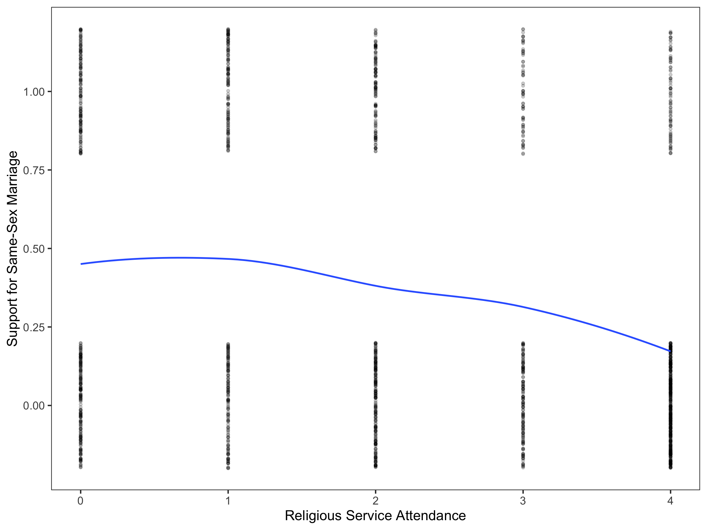
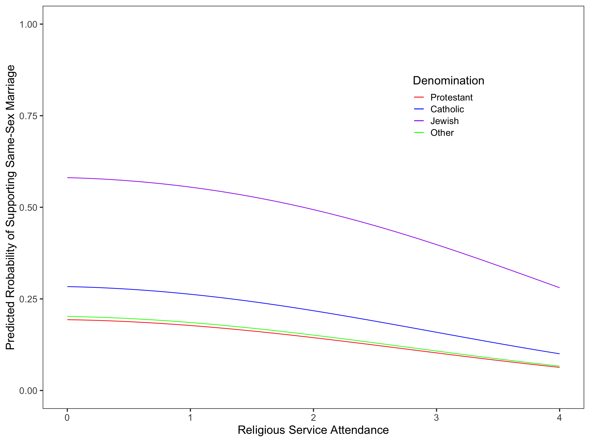

Logistic Regression
The Effect of Religion on Personal Support for Same-Sex Marriage
Religious service attendance and type of denomination are thought to be associated with support for or against same-sex marriage (SSM). To understand more about this relationship, 1746 participants were recruited to take part in a survey that inquired about their service attendance frequency on a Likert-scale (0 = never; 4 = every week) and support for SSM (0 = no; 1 = yes). In addition to this information, the survey asked about participants’ age, denomination, sex (0 = male; 1 = female), and whether they had friends or family that are LGBTQ+ (0 = no; 1 = yes) as a way to collect information about covariates in the primary relationship being investigated. More information about these variables can be attained by looking at the codebook linked below.
Investigating the Relationship
The figure below was created in order to understand the relationship between religious service attendance and support for SSM. While respondents could only answer no (0) or yes (1) to whether they support SSM, in the figure, these data points are dispersed above and below 0 and 1 on the y-axis to demonstrate the number of responses associated with each level of religious service attendance (i.e., more dots corresponds to more responses). To reiterate, even though these data points may appear to be another number in the figure, they are always actually either 0 or 1.
According to this figure, religious service attendance appears to have a negative effect on support for SSM. While religious service attendance appears to be continuous, the relationship between religious service attendance and support for SSM looks to be non-linear, meaning a transformation of one or both of these variables is necessary to carry out a regression.
Creating and Interpretting Model 1
Dichotomous response variables, or those bounded between 0 and 1, require transformation to adjust the Sigmoid curve associated with these variable so that the linearity assumption of regression is met. The logistic function is an effective function to use to transform Sigmoid curves to be linear; therefore, support for SSM was transformed using a logistic transformation. Additionally, the rule of the bulge suggests an upward transformation of the response variable may help with the linearity assumption. After applying these transformations, a regression was carried out (\(\hat{\pi_i}\) is the probability of supporting of SSM in the equation below).
\[ \begin{split} \mathrm{Model~1}:~ \mathrm{ln(\frac{\hat{\pi_i}}{1+\hat{\pi_i}})} &= -0.19 + 0.14(\mathrm{Attendance}_i) - 0.12(\mathrm{Attendance}_i^2) \ \end{split} \]
The predicted log-odds, odds, and probability of a person who supports SSM and doesn’t attend religious service can all be obtained from this equation.
\(\mathrm{log\mbox{-}odds} = -0.19\)
\(\mathrm{odds} = 0.83\)
\(\mathrm{probability} = 0.45\)
These predicted metrics suggest that it is more likely that a person, who does not attend religious services, will not support SSM. Based on the coefficients associated with religious service attendance, attendance is generally associated with a decreased likelihood of supporting SSM and that this effect is stronger as attendance increases, although support for SSM marginally increases for people who attend religious service a few times a year (Attendance = 1).
Investigating Additional Models
From Model 1, four additional models were made by including covariates according to correlations among covariates and between covariates and the outcome variable. Covariates included in the models were introduced in the first paragraph of this project. All models were placed into a table to compare and determine which most appropriately represents the data.
| Model 1 | Model 2 | Model 3 | Model 4 | Model 5 | |
|---|---|---|---|---|---|
| Attendance_L | 0.14 | 0.14 | -0.04 | -0.03 | |
| (0.12) | (0.13) | (0.13) | (0.13) | ||
| Attendance_Q | -0.12 | -0.12 | -0.07 | -0.07 | |
| (0.03) | (0.03) | (0.03) | (0.03) | ||
| Catholic | 0.77 | 0.66 | 0.50 | 0.50 | |
| (0.14) | (0.14) | (0.15) | (0.15) | ||
| Jewish | 0.38 | 0.25 | 0.07 | 0.06 | |
| (0.13) | (0.13) | (0.14) | (0.14) | ||
| Other | 2.30 | 1.93 | 1.76 | 1.76 | |
| (0.52) | (0.53) | (0.55) | (0.55) | ||
| Age | -0.02 | -0.03 | |||
| (0.00) | (0.00) | ||||
| Friends | 0.76 | 0.73 | |||
| (0.11) | (0.11) | ||||
| Female | 0.33 | ||||
| (0.11) | |||||
| Intercept | -0.19 | -1.07 | -0.53 | 0.36 | 0.22 |
| (0.10) | (0.10) | (0.14) | (0.24) | (0.25) | |
| AICc | 2126.47 | 2196.62 | 2085.59 | 1967.75 | 1959.48 |
| R2 | 0.05 | 0.02 | 0.07 | 0.12 | 0.12 |
| The \(R^2\) value is based on the proportion of reduced deviance from the intercept-only model. | |||||
Model 5 was the most appropriate model for the data (AICc = 1959.48; \({R}^2\) = 0.12), although Model 4 received some empirical support (ΔAICc = 8.27).
\[ \begin{align} \mathrm{Model~5}: \mathrm{ln(\frac{\hat{\pi_i}}{1+\hat{\pi_i}})} &= 0.22 - 0.03(\mathrm{Attendance}_i) - 0.07(\mathrm{Attendance}_i^2) + 0.50(\mathrm{Catholic}_i) \nonumber \\ &\quad + 0.06(\mathrm{Jewish}_i) + 1.76(\mathrm{Other}_i) - 0.03(\mathrm{Age}_i) + 0.73(\mathrm{Friends}_i) + 0.33(\mathrm{Female}_i) \end{align} \]
Interpretting Model 5
The following figure presents the predicted probabilities, according to Model 5, of supporting SSM for a 47.7 man (for the mean male age in the sample) who does not have any friends or family that are LGBTQ+.

Similar to Model 1, an increase in religious services attendance is associated with a decreased predicted probability of supporting SSM, and this negative effect increases as attendance frequency increases. Of all religious denominations in this study, people who identify as protestant have the lowest predicted probability of supporting SSM and people who are Jewish have the highest predicted probability. This is consistent across all levels of service attendance.
People who have friends or family members that are LGBTQ+ have a higher predicted probability of supporting SSM than those who do not, and women have a higher predicted probability of supporting SSM than men. Attending religious service is associated with a decreased probability of supporting SSM, and this effect of religious service attendance becomes stronger as attendance frequency increases (i.e., the more frequent a person attends religious services, the less likely they support SSM).